The Constitutional Controller: Doubt-Calibrated Steering of Compliant Agents
Setup
[3]:
import glob
import json
from copy import deepcopy
from pathlib import Path
from pickle import dump
import matplotlib
import matplotlib.pyplot as plt
import numpy as np
import pandas as pd
import seaborn as sns
import torch
from matplotlib.patches import Polygon
from networkx import Graph
from numpy import array, eye, float32
from PIL import Image
from promis import ConstitutionalController, ProMis, StaRMap
from promis.coco import DoubtDensity
from promis.geo import (
CartesianCollection,
CartesianMap,
CartesianPolygon,
CartesianRasterBand,
PolarLocation,
)
[4]:
%load_ext autoreload
%autoreload 2
[5]:
# Make plots look nice in a paper
matplotlib.rcParams["pdf.fonttype"] = 42
matplotlib.rcParams["ps.fonttype"] = 42
sns.set_theme(style="ticks", rc={"legend.title_fontsize": 15}) # "figure.figsize": (10, 4)
sns.set_style({"font.family": "serif", "font.serif": "Times New Roman"})
Preparing the scenario
Loading the image, loading the identified foam blocks from the vision model, and rescaling everything to a common reference in millimeters.
[6]:
scene_image = Image.open("coco_linearized_image.png")
scene_image
[6]:
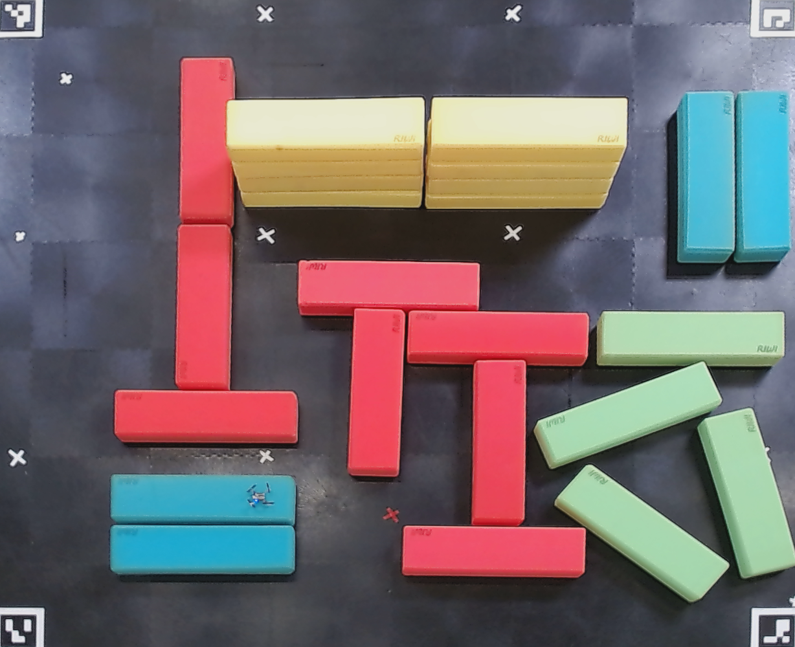
[7]:
boxes_df = pd.read_csv("coco_bounding_boxes.csv")
boxes_df
[7]:
| x | y | width | height | area | stability_score | avg_hue | color | poly_oriented | |
|---|---|---|---|---|---|---|---|---|---|
| 0 | 857.0 | 718.0 | 268.0 | 213.0 | 23442 | 0.987449 | 60.639493 | green | [(1129, 871), (1072, 938), (850, 778), (909, 7... |
| 1 | 270.0 | 347.0 | 88.0 | 256.0 | 21633 | 0.983448 | 169.852494 | red | [(361, 347), (354, 603), (269, 603), (274, 347)] |
| 2 | 921.0 | 481.0 | 291.0 | 86.0 | 24434 | 0.991605 | 55.644512 | green | [(1212, 482), (1212, 567), (920, 565), (922, 4... |
| 3 | 824.0 | 560.0 | 290.0 | 165.0 | 22460 | 0.986512 | 63.096527 | green | [(1120, 628), (846, 728), (818, 653), (1087, 5... |
| 4 | 176.0 | 603.0 | 283.0 | 83.0 | 22956 | 0.984746 | 156.305280 | red | [(459, 604), (459, 686), (176, 684), (176, 602)] |
| 5 | 1078.0 | 631.0 | 149.0 | 263.0 | 23535 | 0.984483 | 62.889356 | green | [(1236, 874), (1144, 895), (1072, 649), (1165,... |
| 6 | 275.0 | 89.0 | 87.0 | 511.0 | 20281 | 0.984647 | 157.864947 | red | [(359, 350), (276, 344), (278, 90), (362, 88)] |
| 7 | 277.0 | 89.0 | 85.0 | 261.0 | 20277 | 0.985652 | 157.793017 | red | [(359, 350), (276, 344), (278, 90), (362, 88)] |
| 8 | 459.0 | 403.0 | 281.0 | 85.0 | 21677 | 0.986254 | 168.381510 | red | [(740, 405), (740, 478), (458, 491), (460, 401)] |
| 9 | 537.0 | 477.0 | 89.0 | 260.0 | 20830 | 0.985040 | 168.560922 | red | [(626, 478), (615, 738), (535, 734), (545, 476)] |
| 10 | 921.0 | 481.0 | 291.0 | 161.0 | 24423 | 0.991484 | 55.591369 | green | [(1212, 482), (1212, 567), (920, 565), (922, 4... |
| 11 | 841.0 | 481.0 | 371.0 | 225.0 | 24475 | 0.984727 | 55.596200 | green | [(1212, 482), (1212, 567), (921, 565), (921, 4... |
| 12 | 621.0 | 813.0 | 283.0 | 79.0 | 21752 | 0.985215 | 168.387643 | red | [(904, 815), (902, 893), (621, 889), (621, 812)] |
| 13 | 857.0 | 607.0 | 269.0 | 324.0 | 23496 | 0.979946 | 60.623808 | green | [(1130, 871), (1072, 938), (850, 778), (908, 7... |
| 14 | 1133.0 | 140.0 | 88.0 | 266.0 | 21732 | 0.972221 | 95.388551 | blue | [(1217, 140), (1222, 403), (1132, 406), (1137,... |
| 15 | 1045.0 | 141.0 | 90.0 | 266.0 | 23529 | 0.983601 | 95.043138 | blue | [(1135, 407), (1045, 407), (1045, 142), (1135,... |
| 16 | 628.0 | 481.0 | 281.0 | 85.0 | 22264 | 0.980378 | 156.182357 | red | [(909, 484), (906, 566), (626, 562), (630, 478)] |
| 17 | 170.0 | 811.0 | 285.0 | 77.0 | 21810 | 0.979635 | 95.452361 | blue | [(455, 812), (455, 888), (170, 888), (170, 810)] |
| 18 | 656.0 | 150.0 | 313.0 | 173.0 | 51288 | 0.985704 | 24.693944 | yellow | [(997, 150), (930, 321), (655, 323), (659, 150)] |
| 19 | 728.0 | 556.0 | 84.0 | 257.0 | 20919 | 0.980561 | 171.159711 | red | [(810, 813), (727, 811), (730, 557), (812, 554)] |
| 20 | 171.0 | 734.0 | 286.0 | 78.0 | 21824 | 0.984939 | 95.286199 | blue | [(458, 734), (455, 812), (171, 809), (171, 734)] |
| 21 | 170.0 | 733.0 | 287.0 | 151.0 | 21646 | 0.970442 | 95.186963 | blue | [(457, 734), (455, 812), (169, 809), (171, 732)] |
| 22 | 728.0 | 502.0 | 177.0 | 311.0 | 20929 | 0.977016 | 171.136222 | red | [(812, 557), (810, 813), (727, 811), (730, 557)] |
| 23 | 350.0 | 151.0 | 305.0 | 170.0 | 49467 | 0.986318 | 24.566297 | yellow | [(655, 321), (376, 318), (328, 154), (655, 150)] |
| 24 | 176.0 | 564.0 | 284.0 | 121.0 | 23007 | 0.974139 | 156.675620 | red | [(461, 604), (458, 685), (176, 683), (176, 602)] |
[8]:
# Calculate the size of the image in millimeters
average_box_width_pixels = (277 + 281 + 245) / 3
average_box_height_pixels = (65 + 65 + 74) / 3
# True measurements in mm
box_width_mm = 800
box_height_mm = 200
# Calculate the pixel size in mm
pixel_height_mm = box_height_mm / average_box_height_pixels
pixel_width_mm = box_width_mm / average_box_width_pixels
# The image is linearized, so these two should not be too different (at most 5%)
assert abs(pixel_height_mm - pixel_width_mm) / pixel_height_mm < 0.05
# Size of the entire setup
field_width_mm = scene_image.width * pixel_width_mm
field_height_mm = scene_image.height * pixel_height_mm
(field_width_mm, field_height_mm), (pixel_height_mm, pixel_width_mm)
[8]:
((3670.236612702366, 2941.1764705882356),
(2.9411764705882355, 2.9887920298879203))
[9]:
# Check that the aspect ratios are not too far off
(scene_image.width / scene_image.height), (field_width_mm / field_height_mm)
[9]:
(1.228, 1.2478804483188044)
[10]:
map_features = []
for index, box in boxes_df.iterrows():
coords = array(
json.loads(box["poly_oriented"].replace("(", "[").replace(")", "]")), dtype=float32
)
if coords.shape[0] != 4:
print(f"The coordinates at index #{index} are not in the right format, skipping")
continue
# Rescale the coordinates from pixels to millimeters in the real world
coords[:, 0] *= pixel_width_mm
coords[:, 1] *= pixel_height_mm
# Make sure that (0, 0) is the center of the cage
coords[:, 0] -= field_width_mm / 2
coords[:, 1] -= field_height_mm / 2
coords[:, 1] *= -1 # Flip the y-axis to go from image to real world coordinates
# Convert the coordinates to a CartesianPolygon
map_features.append(CartesianPolygon.from_numpy(coords.T, location_type=box["color"]))
len(map_features), map_features[0]
[10]:
(25,
CartesianPolygon(locations=[(1539.2279052734375, -1091.1763916015625), (1368.8665771484375, -1288.2352294921875), (705.3548583984375, -817.6470947265625), (881.6934814453125, -626.4705810546875), (1539.2279052734375, -1091.1763916015625)], location_type=green, identifier=169775070840615221))
[11]:
# Visualize the bounding boxes
plt.imshow(
scene_image,
extent=(-field_width_mm / 2, field_width_mm / 2, -field_height_mm / 2, field_height_mm / 2),
)
for polygon in map_features:
plt.gca().add_patch(
Polygon(
[(loc.x, loc.y) for loc in polygon.locations],
fill=True,
edgecolor="black",
facecolor=polygon.location_type,
linewidth=1,
alpha=0.5,
)
)
plt.gca().set_xticks([])
plt.gca().set_yticks([])
sns.despine(bottom=True, left=True)
plt.tight_layout(pad=0)
plt.savefig("coco_linearized_image_with_bounding_boxes.pdf", bbox_inches="tight")
plt.show()
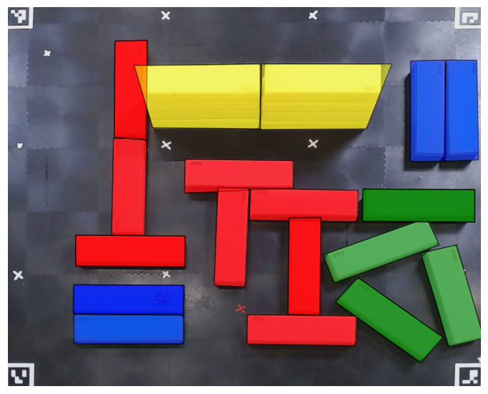
Learn the doubt model
[12]:
# Select a compute device
devices = ["cpu", "mps", "cuda"]
device = devices[2]
# torch.set_default_device(device)
torch.set_default_dtype(torch.double)
[53]:
# Data preparation
timescales_float = [1.2, 1.5, 2.0, 3.0, 6.0]
timescales = ["1_2", "1_5", "2", "3", "6"]
timescale_str_to_speed = {"1": 1.2, "1_2": 1.0, "1_5": 0.8, "2": 0.6, "3": 0.4, "6": 0.2}
tunings = [
"Default Tuning (T_PID = 0)",
"Altered Position Tuning (T_PID = 1)",
"Altered Att and Att Rate Tuning (T_PID = 2)",
]
speed_to_timescale = {1.2: 1.0, 1.0: 1.2, 0.8: 1.5, 0.6: 2.0, 0.4: 3.0, 0.2: 6.0}
timescale_to_speed = {1.0: 1.2, 1.2: 1.0, 1.5: 0.8, 2.0: 0.6, 3.0: 0.4, 6.0: 0.2}
trained_speeds = [timescale_to_speed[ts] for ts in timescales_float]
training_xy = None
training_controller = None
training_speed = None
for controller_index, tuning in enumerate(tunings):
for time_index, timescale in enumerate(timescales):
path = f"data/drone-doubt-recordings/{tuning}_timescale{timescale}"
matching_files = glob.glob(f"{path}*.csv")
dfs = []
for match in matching_files:
dfs.append(pd.read_csv(match))
for df in dfs:
# xs = torch.from_numpy(np.abs(df['stateEstimateX'] - df['posCtltargetX']).to_numpy())[:, None]
# ys = torch.from_numpy(np.abs(df['stateEstimateY'] - df['posCtltargetY']).to_numpy())[:, None]
xs = torch.from_numpy(df["errorX"].to_numpy())[:, None]
ys = torch.from_numpy(df["errorY"].to_numpy())[:, None]
xy = torch.hstack([xs, ys])
controller = torch.tensor([controller_index] * len(xs))[:, None]
time_scale = timescales_float[time_index]
speed = torch.tensor([timescale_to_speed[time_scale]] * len(xs))[:, None]
if training_xy is None:
training_xy = xy
training_controller = controller
training_speed = speed
else:
training_xy = torch.vstack([training_xy, xy])
training_controller = torch.vstack([training_controller, controller])
training_speed = torch.vstack([training_speed, speed])
# Add randomly rotated copies
for _ in range(4):
theta = torch.rand(1).item() * 2 * np.pi # angle between 0 and 2π
rotation_matrix = torch.tensor(
[[np.cos(theta), -np.sin(theta)], [np.sin(theta), np.cos(theta)]]
)
training_xy = torch.vstack([training_xy, xy @ rotation_matrix.T])
training_controller = torch.vstack([training_controller, controller])
training_speed = torch.vstack([training_speed, speed])
[54]:
# Training
doubt_space = {
"controller": {
"type": "categorical",
"number_of_classes": 3,
"values": training_controller,
},
"speed": {
"type": "continuous",
"values": training_speed,
},
}
doubt_density = DoubtDensity(
doubt_space=doubt_space, number_of_states=2, number_of_hidden_features=100, number_of_layers=5
)
number_of_epochs = 1
batch_size = 100
losses = doubt_density.fit(training_xy, doubt_space, number_of_epochs, batch_size)
Learning Doubt Density: 100%|██████████| 1/1 [00:03<00:00, 3.42s/epoch]
[55]:
# Visualization
fig, ax = plt.subplots(3, 5, figsize=(9, 5.5), sharex=True, sharey=True)
for time_index, speed in enumerate(trained_speeds):
ax[2, time_index].set_xlabel(rf"$v = {speed}\ ms^{-1}$", fontsize=15)
for controller_index, tuning in enumerate(tunings):
for time_index, speed in enumerate(trained_speeds):
axis = ax[controller_index, time_index]
axis.set_aspect(1)
axis.set_yticks([-1, 0, 1])
axis.set_xticks([-1, 0, 1])
if time_index == 0:
axis.set_ylabel(f"Tuning {controller_index}", fontsize=15)
resolution = 250
xline = torch.linspace(-1.0, 1.0, resolution)
yline = torch.linspace(-1.0, 1.0, resolution)
xgrid, ygrid = torch.meshgrid(xline, yline, indexing="xy")
states = torch.cat([xgrid.reshape(-1, 1), ygrid.reshape(-1, 1)], dim=1)
with torch.no_grad():
doubt_space["speed"]["values"] = torch.tensor([speed] * resolution * resolution)[
:, None
]
doubt_space["controller"]["values"] = torch.tensor(
[controller_index] * resolution * resolution
)[:, None]
density = doubt_density.prob(states, doubt_space).reshape(resolution, resolution)
axis.scatter(xgrid.numpy(), ygrid.numpy(), c=density.numpy(), cmap="Reds", rasterized=True)
sns.despine()
plt.tight_layout()
plt.subplots_adjust(
wspace=0.1,
hspace=0.1,
)
plt.savefig("doubt_density.pdf")
plt.show()
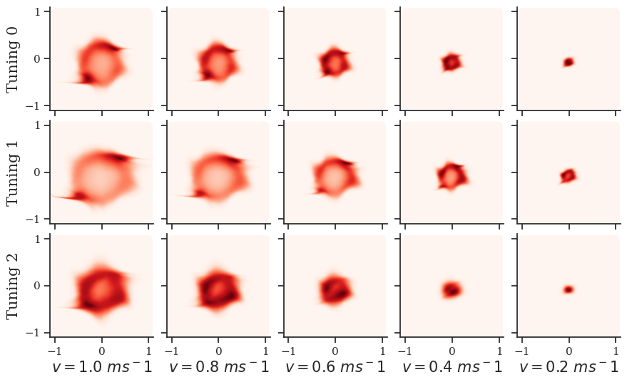
[67]:
fig, ax = plt.subplots(1, 1, figsize=(5.5, 4.5))
ax.plot(range(len(losses)), losses, c='r')
# ax.set_aspect(len(losses) / 12)
ax.set_xlim(None, 500)
ax.set_ylim(None, 6)
ax.set_ylabel(r"$-log\ \delta(x | \theta)$", fontsize=15)
ax.set_xlabel("Training Steps", fontsize=15)
sns.despine()
plt.tight_layout()
plt.savefig('doubt_loss.pdf', bbox_inches=0)
plt.show()
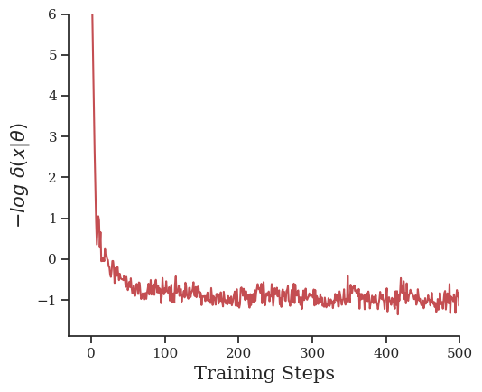
Model the environment using StaRMap / ProMis
[13]:
# Covariance matrices for some of the features
# Used to draw random translations representing uncertainty for the respective features
pos_std = 50 # millimeters
covariance = {
"red": pos_std**2 * eye(2),
"green": pos_std**2 * eye(2),
"blue": pos_std**2 * eye(2),
"yellow": pos_std**2 * eye(2),
}
# The probabilistic, logical constraints to fulfill during a mission
def logic(speed: float) -> str:
return rf"""
% Perception from sensors
velocity ~ normal({speed}, 0.1).
% Background knowledge
rule_1(X) :- \+ over(X, red).
rule_2(X) :- distance(X, yellow) > 50.
rule_3(X) :- \+ over(X, green); velocity < 0.8.
% Compliance with Constitution P(C | x, z)
landscape(X) :- rule_1(X), rule_2(X), rule_3(X).
"""
# The mission area, points that will be estimated from 25 samples and points that will be interpolated
origin = PolarLocation(latitude=0.0, longitude=0.0) # Irrelevant for Cartesian maps
number_of_random_maps = 25
support = CartesianRasterBand(
origin, (300, 300), field_width_mm, field_height_mm
) # This is the set of points that will be directly computed through sampling (expensive)
target = CartesianRasterBand(
origin, (300, 300), field_width_mm, field_height_mm
) # This is the set of points that will be interpolated from the support set (cheap)
uam = CartesianMap(origin, map_features)
uam.apply_covariance(covariance) # Assigns the covariance matrices defined earlier
landscape_path = Path("data/virtual_setup_landscape.pkl")
if landscape_path.exists():
landscape = CartesianCollection.load(landscape_path)
else:
# Setting up the probabilistic spatial relations from the map data
star_map = StaRMap(target, uam)
# This estimates all spatial relations that are relevant to the given logic
concrete_logic = logic(speed=0.25)
star_map.initialize(support, number_of_random_maps, concrete_logic)
star_map.save("data/virtual_setup_star_map.pkl")
# Solve the mission area with ProMis
promis = ProMis(star_map)
landscape = promis.solve(support, concrete_logic, n_jobs=4, batch_size=8, show_progress=True)
landscape.save(landscape_path)
star_map = StaRMap.load("data/virtual_setup_star_map.pkl")
[14]:
coollection = star_map.get("over", "red").parameters
img = coollection.scatter(
value_index=0,
plot_basemap=False,
rasterized=True,
cmap="coolwarm_r",
s=0.25,
)
cbar = plt.colorbar(img, pad=0.01)
plt.show()
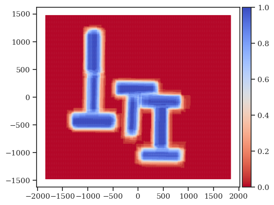
[59]:
# plt.imshow(
# scene_image.convert("L"),
# cmap="gray",
# extent=landscape.extent(),
# rasterized=True,
# )
# # image = landscape.scatter(
# # plot_basemap=False,
# # ax=plt.gca(),
# # rasterized=True,
# # cmap="coolwarm_r",
# # alpha=0.6,
# # s=0.15,
# # vmin=0,
# # vmax=1,
# # )
# image = plt.imshow(
# landscape.values().reshape(landscape.resolution)[::-1, :],
# extent=landscape.extent(),
# cmap="coolwarm_r",
# alpha=0.6,
# vmin=0,
# vmax=1,
# rasterized=True,
# )
# cbar = plt.colorbar(image, ticks=[0.0, 0.5, 1.0], aspect=30, pad=0.02)
# cbar.ax.set_yticklabels(["0.0", "0.5", "1.0"])
# cbar.solids.set(alpha=1)
# # plt.title("P(mission_landscape)")
# # plt.xlabel("x / m")
# # plt.ylabel("y / m")
# # ticks = [-1_500, 0, 1_500]
# # labels = ["-1.5", "0", "1.5"]
# # plt.xticks(ticks, labels)
# # plt.yticks(ticks, labels)
# # plt.xlim([-1_850, 1_850])
# # plt.ylim([-1_500, 1_500])
# plt.gca().set_aspect(scene_image.width / scene_image.height, adjustable="box")
# plt.gca().set_xticks([])
# plt.gca().set_yticks([])
# sns.despine(bottom=True, left=True)
# plt.savefig("drone_landscape_high_speed.pdf", bbox_inches="tight")
# plt.show()
Adjust the landscape using the doubt & plan paths for experiments
[18]:
# Load the landscape produced by promis.ipynb and init CoCo
from promis import ConstitutionalController
from pathlib import Path
from networkx import Graph
coco = ConstitutionalController()
Path("data/drone-exp").mkdir(exist_ok=True)
landscapes = {}
# Select different doubt feature values, here we have just one feature velocity
# and use it directly as doubt density parameter
for controller in [0]:
start = (-600, -900)
goal = (1_350, 1_000)
min_speed = 0.3
max_speed = 1.4
# speeds = [0.2, 0.3, 0.4, 0.5, 0.6, 0.7, 0.8, 0.9, 1.0]
speeds = [0.2, 0.5, 1.0]
yaws = [0.0 * np.pi, 0.5 * np.pi, 1.0 * np.pi]
start_speed = speeds[0]
end_speed = speeds[0]
# Only comes from the speed component
min_cost = min_speed / max_speed # All speed costs are scaled to this anyway
vertical_weight = min_cost
augmented_graphs: list[Graph] = []
for yaw in yaws:
for speed in speeds:
plt.title(f"controller={controller} | speed={speed:.2f} | yaw={yaw:.2f}")
def cost_model(p):
consitution_cost = (1.0 - p) * 2.0
time_cost = min_speed / speed
return consitution_cost + time_cost
def value_filter(p):
return p >= min_cost
# Compute the landscape
try:
landscape = landscapes[speed]
path_wo_doubt = np.load(f"data/drone-exp/original_path-speed-{speed:.2f}-yaw-{yaw:.2f}.npy")
except KeyError:
promis = ProMis(star_map)
landscape = promis.solve(
support, logic(speed=speed), n_jobs=4, batch_size=8, show_progress=True
)
landscapes[speed] = landscape
# Save the landscape for later use
landscape.save(f"data/drone-exp/original_landscape-speed-{speed:.2f}-yaw-{yaw:.2f}.pkl")
# Search for a path
# path_wo_doubt = landscape.search_path(
# start, goal, cost_model=cost_model, value_filter=value_filter, min_cost=min_cost
# )
# np.save(f"data/drone-exp/original_path-speed-{speed:.2f}-yaw-{yaw:.2f}.npy", path_wo_doubt)
# Then express doubt
ds = deepcopy(doubt_space)
ds["controller"]["values"] = torch.tensor([[controller]])
ds["speed"]["values"] = torch.tensor([[speed]])
ds["yaw"]["values"] = torch.tensor([[yaw]])
augmented_landscape: CartesianRasterBand = coco.apply_doubt(
landscape=landscape,
doubt_density=doubt_density,
doubt_space=ds,
number_of_samples=100,
)
augmented_landscape.save(
f"data/drone-exp/augmented_landscape-controller-{controller}-speed-{speed:.2f}-yaw-{yaw:.2f}.pkl"
)
augmented_landscape.scatter(vmin=0, vmax=1)
plt.title(f"{speed} | {controller} | {yaw}")
plt.show()
# Turn into a graph and save it
augmented_graph = augmented_landscape.to_graph(
cost_model=cost_model, value_filter=value_filter
)
with open(
f"data/drone-exp/augmented_graph-controller-{controller}-speed-{speed:.2f}-yaw-{yaw:.2f}.pkl", "wb"
) as f:
dump(augmented_graph, f)
augmented_graphs.append(augmented_graph)
# Plot the landscape
image = augmented_landscape.scatter(
s=0.4, plot_basemap=False, rasterized=True, cmap="coolwarm_r", alpha=0.25
)
cbar = plt.colorbar(image, ticks=[0.0, 0.5, 1.0], aspect=25, pad=0.02)
cbar.ax.set_yticklabels(["0.0", "0.5", "1.0"])
cbar.solids.set(alpha=1)
# # Search for a path
# path = augmented_landscape.search_path(
# start, goal, cost_model=cost_model, value_filter=value_filter, min_cost=min_cost
# )
# np.save(
# f"data/drone-exp/augmented_path-controller-{controller}-speed-{speed:.2f}-yaw-{yaw:.2f}.npy", path
# )
# Plot the path
# scatter = plt.scatter(
# [n[0] for n in path_wo_doubt],
# [n[1] for n in path_wo_doubt],
# s=1,
# c="black",
# vmin=0,
# vmax=1,
# )
# scatter = plt.scatter(
# [n[0] for n in path],
# [n[1] for n in path],
# s=1,
# c=[
# coco.compliance(
# path=path,
# landscape=augmented_landscape,
# doubt_density=doubt_density,
# doubt_space=doubt_space,
# number_of_samples=100,
# )
# ],
# vmin=0,
# vmax=1,
# cmap="berlin",
# )
# cbar = plt.colorbar(scatter, ticks=[0.0, 0.5, 1.0], aspect=25, pad=0.02)
# cbar.ax.set_yticklabels(["0.0", "0.5", "1.0"])
# cbar.solids.set(alpha=1)
# plt.gca().set_aspect(scene_image.width / scene_image.height, adjustable="box")
# plt.gca().set_xticks([])
# plt.gca().set_yticks([])
# sns.despine(bottom=True, left=True)
# plt.show()
extended_graph = CartesianRasterBand.stack_graphs(
augmented_graphs, labels=[s for s in speeds], vertical_weight=vertical_weight
)
with open(f"data/drone-exp/extended_graph-controller-{controller}.pkl", "wb") as f:
dump(extended_graph, f)
path = augmented_landscape.search_path( # sic
(*start, start_speed),
(*goal, end_speed),
graph=extended_graph,
cost_model=cost_model,
value_filter=value_filter,
min_cost=min_cost,
)
np.save(f"data/drone-exp/extended_path-controller-{controller}.npy", path)
Lowered zoom level to keep map size reasonable. (z = 14)
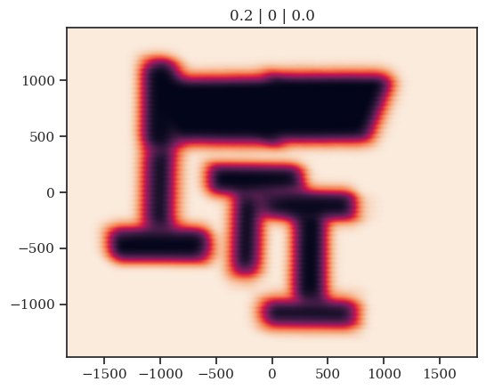
Lowered zoom level to keep map size reasonable. (z = 14)
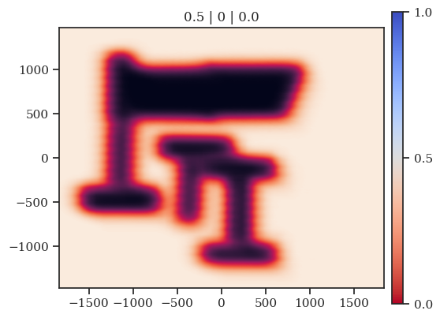
Lowered zoom level to keep map size reasonable. (z = 14)
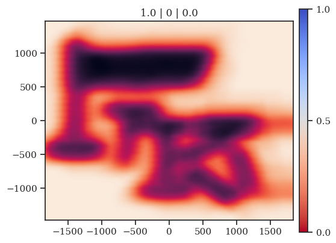
---------------------------------------------------------------------------
FileNotFoundError Traceback (most recent call last)
Cell In[18], line 47
45 try:
46 landscape = landscapes[speed]
---> 47 path_wo_doubt = np.load(f"data/drone-exp/original_path-speed-{speed:.2f}-yaw-{yaw:.2f}.npy")
48 except KeyError:
49 promis = ProMis(star_map)
File /Volumes/Vault/Repositories/CoCo/venv/lib/python3.13/site-packages/numpy/lib/_npyio_impl.py:451, in load(file, mmap_mode, allow_pickle, fix_imports, encoding, max_header_size)
449 own_fid = False
450 else:
--> 451 fid = stack.enter_context(open(os.fspath(file), "rb"))
452 own_fid = True
454 # Code to distinguish from NumPy binary files and pickles.
FileNotFoundError: [Errno 2] No such file or directory: 'data/drone-exp/original_path-speed-0.20-yaw-1.57.npy'
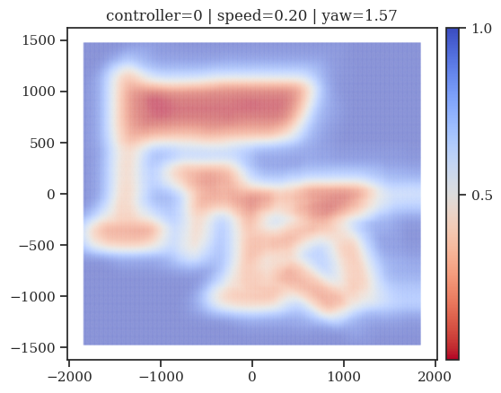
[ ]:
controllers = [0]
# speeds = [0.2, 0.3, 0.4, 0.5, 0.6, 0.7, 0.8, 0.9, 1.0]
# speeds = [0.2, 0.3, 0.4, 0.5, 0.6, 0.7, 0.8, 0.9, 1.0]
for controller in controllers:
for speed in speeds:
show_landscape = CartesianCollection.load(f"data/drone-exp/augmented_landscape-controller-{controller}-speed-{speed:.2f}.pkl")
plt.imshow(
scene_image.convert("L"),
cmap="gray",
extent=landscape.extent(),
rasterized=True,
)
show_landscape.data['v0'] = show_landscape.data['v0'].clip(0.0, 1.0)
image = plt.imshow(
show_landscape.values().reshape(show_landscape.resolution)[::-1, :],
extent=landscape.extent(),
cmap="Reds_r",
alpha=0.75,
vmin=0.0,
vmax=1.0,
rasterized=True,
)
cbar = plt.colorbar(image, ticks=[0.0, 0.5, 1.0], aspect=30, pad=0.02)
cbar.ax.set_yticklabels(["0.0", "0.5", "1.0"])
cbar.solids.set(alpha=1)
plt.gca().set_aspect(scene_image.width / scene_image.height, adjustable="box")
plt.gca().set_xticks([])
plt.gca().set_yticks([])
sns.despine(bottom=True, left=True)
plt.savefig(f"augmented_landscape_overlay-controller-{controller}-speed-{speed:.2f}.pdf", bbox_inches="tight")
plt.show()
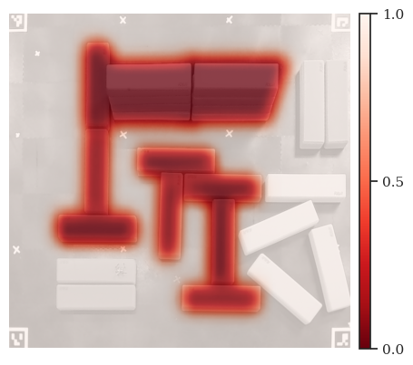
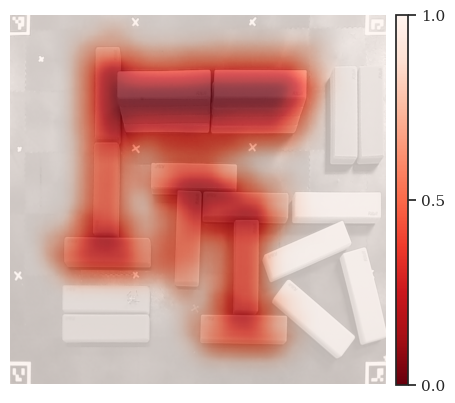
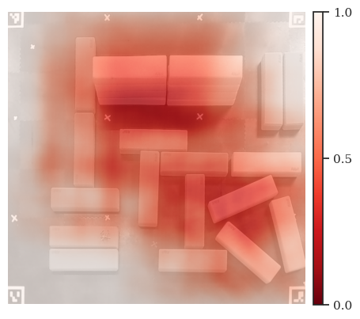
[ ]:
import glob
import pandas as pd
import seaborn as sns
plt.gca().add_patch(
plt.Rectangle((-2.0, -1.6), 4.0, 4.0, fc="dimgray", zorder=1)
)
plt.imshow(
scene_image.convert("L"),
cmap="gray",
extent=(-1.835, 1.835, -1.45, 1.45),
rasterized=True,
zorder=2
)
plt.xlim(-2, 2)
plt.ylim(-1.6, 1.6)
plt.xticks([-1.6, 0.0, 1.6])
plt.yticks([-1.5, 0.0, 1.5])
matching_files = glob.glob("rosbag-recordings/coco-dynamic/*.csv")
for file in matching_files:
df = pd.read_csv(file)
image = plt.scatter(df['stateEstimateX'], df['stateEstimateY'], c=df['velocity'], cmap="hot", s=1, zorder=3)
cbar = plt.colorbar(image, aspect=30, pad=0.02)
cbar.solids.set(alpha=1)
sns.despine()
plt.show()

[8]:
import glob
import pandas as pd
import seaborn as sns
import matplotlib.pyplot as plt
fig, axes = plt.subplots(2, 3, figsize=(15, 6), sharex=True, sharey=True)
paths = [
["rosbag-recordings/coco-fixed-0.2/*.csv", "rosbag-recordings/coco-fixed-0.5/*.csv", "rosbag-recordings/coco-fixed-1.0/*.csv"],
["rosbag-recordings/promis-0.2/*.csv", "rosbag-recordings/promis-0.5/*.csv", "rosbag-recordings/promis-1.0/*.csv"],
]
axes[0,0].set_ylabel("CoCo (Ours)")
axes[1,0].set_ylabel("ProMis")
axes[1,0].set_xlabel(r"$v = 0.2\ ms^{-1}$")
axes[1,1].set_xlabel(r"$v = 0.5\ ms^{-1}$")
axes[1,2].set_xlabel(r"$v = 1.0\ ms^{-1}$")
for speed_index in range(3):
for setting in range(2):
ax = axes[setting, speed_index]
path = paths[setting][speed_index]
ax.add_patch(
plt.Rectangle((-2.0, -1.6), 4.0, 4.0, fc="dimgray", zorder=1)
)
ax.imshow(
scene_image.convert("L"),
cmap='gray',
extent=(-1.835, 1.835, -1.45, 1.45),
rasterized=True,
zorder=2
)
ax.set_xlim(-2, 2)
ax.set_ylim(-1.6, 1.6)
ax.set_xticks([-1.6, 0.0, 1.6])
ax.set_yticks([-1.5, 0.0, 1.5])
ax.set_xticks([-1.835, 0.0, 1.835], labels=["-1.835", "0", "1.835"])
ax.set_yticks([-1.45, 0.0, 1.45], labels=["-1.45", "0", "1.45"])
ax.set_xlabel("x / m", fontsize=15)
matching_files = glob.glob(path)
for file in matching_files:
df = pd.read_csv(file)
first_index = (df['stateEstimateZ'] < 0.2).idxmax() if (df['stateEstimateZ'] < 0.2).any() else None
if first_index is not None and first_index > 10 and setting == 1:
ax.scatter(df['stateEstimateX'][first_index], df['stateEstimateY'][first_index], marker='x', c='firebrick', s=150, zorder=4)
image = ax.scatter(df['stateEstimateX'].iloc[:first_index], df['stateEstimateY'].iloc[:first_index], c=df['velocity'].iloc[:first_index], s=1, cmap="hot", vmin=0, vmax=1.2, zorder=3)
else:
image = ax.scatter(df['stateEstimateX'], df['stateEstimateY'], c=df['velocity'], s=1, cmap="hot", vmin=0, vmax=1.2, zorder=3)
cbar_ax = fig.add_axes([0.85, 0.1, 0.015, 0.85])
fig.colorbar(image, cax=cbar_ax, aspect=25, fraction=0.089, pad=0.02)
sns.despine()
fig.subplots_adjust(right=2.1, wspace=0.5)
plt.tight_layout()
plt.savefig("velocity_fixed.pdf")
plt.show()
/var/folders/6d/lnl2js6d6c979vbqkyk58b8w0000gn/T/ipykernel_14640/2628332718.py:58: UserWarning: This figure includes Axes that are not compatible with tight_layout, so results might be incorrect.
plt.tight_layout()
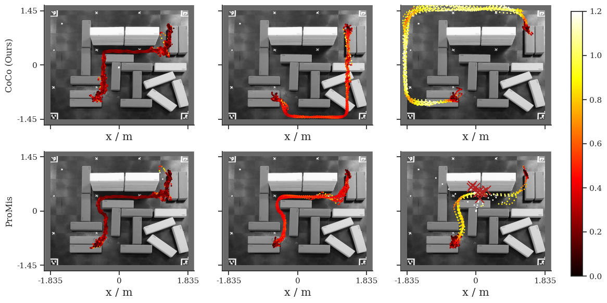
[ ]:
import glob
import pandas as pd
import seaborn as sns
import matplotlib.pyplot as plt
from scipy.stats import multivariate_normal
from promis import ConstitutionalController
from promis.geo import CartesianCollection
fig, axes = plt.subplots(2, 3, figsize=(18, 7), sharex=True, sharey=True)
paths = [
["rosbag-recordings/coco-fixed-0.2/*.csv", "rosbag-recordings/coco-fixed-0.5/*.csv", "rosbag-recordings/coco-fixed-1.0/*.csv"],
["rosbag-recordings/promis-0.2/*.csv", "rosbag-recordings/promis-0.5/*.csv", "rosbag-recordings/promis-1.0/*.csv"],
]
axes[0,0].set_ylabel("CoCo (Ours)")
axes[1,0].set_ylabel("ProMis")
axes[1,0].set_xlabel(r"$v = 0.2\ ms^{-1}$")
axes[1,1].set_xlabel(r"$v = 0.5\ ms^{-1}$")
axes[1,2].set_xlabel(r"$v = 1.0\ ms^{-1}$")
for speed_index in range(3):
for setting in range(2):
ax = axes[setting, speed_index]
path = paths[setting][speed_index]
ax.add_patch(
plt.Rectangle((-2.0, -1.6), 4.0, 4.0, fc="dimgray", zorder=1)
)
ax.imshow(
scene_image.convert("L"),
cmap='gray',
extent=(-1.835, 1.835, -1.45, 1.45),
rasterized=True,
zorder=2
)
ax.set_xlim(-2, 2)
ax.set_ylim(-1.6, 1.6)
ax.set_xticks([-1.6, 0.0, 1.6])
ax.set_yticks([-1.5, 0.0, 1.5])
if speed_index == 2:
landscape = CartesianCollection.load("virtual_setup_landscape_speed_1.0.pkl")
else:
landscape = CartesianCollection.load("virtual_setup_landscape_speed_0.5.pkl")
class Mock:
def __init__(self):
self.density = multivariate_normal([0.0, 0.0], [[1.0, 0.0], [0.0, 1.0]])
def sample(self, n, c):
return [self.density.rvs(n)]
matching_files = glob.glob(path)
for file in matching_files:
df = pd.read_csv(file)
first_index = (df['stateEstimateZ'] < 0.2).idxmax() if (df['stateEstimateZ'] < 0.2).any() else None
path = 1000.0 * np.vstack([df['stateEstimateX'], df['stateEstimateY']]).T
compliance_ps = ConstitutionalController().compliance(path, landscape, Mock(), None, 100)
if first_index is not None and first_index > 10 and setting == 1:
ax.scatter(df['stateEstimateX'][first_index], df['stateEstimateY'][first_index], marker='x', c='firebrick', s=150, zorder=4)
image = ax.scatter(df['stateEstimateX'].iloc[:first_index], df['stateEstimateY'].iloc[:first_index], c=compliance_ps[:first_index], s=1, cmap="coolwarm", vmin=0, vmax=1.0, zorder=3)
else:
image = ax.scatter(df['stateEstimateX'], df['stateEstimateY'], c=compliance_ps, s=1, cmap="coolwarm", vmin=0, vmax=1.0, zorder=3)
cbar_ax = fig.add_axes([0.85, 0.1, 0.015, 0.85])
fig.colorbar(image, cax=cbar_ax, aspect=25, fraction=0.03, pad=0.02)
sns.despine()
fig.subplots_adjust(right=2.1, wspace=0.5)
plt.tight_layout()
plt.savefig("velocity_fixed_compliance.pdf")
plt.show()
---------------------------------------------------------------------------
KeyboardInterrupt Traceback (most recent call last)
Cell In[25], line 62
59 first_index = (df['stateEstimateZ'] < 0.2).idxmax() if (df['stateEstimateZ'] < 0.2).any() else None
61 path = 1000.0 * np.vstack([df['stateEstimateX'], df['stateEstimateY']]).T
---> 62 compliance_ps = ConstitutionalController().compliance(path, landscape, Mock(), None, 100)
64 if first_index is not None and first_index > 10 and setting == 1:
65 ax.scatter(df['stateEstimateX'][first_index], df['stateEstimateY'][first_index], marker='x', c='firebrick', s=150, zorder=4)
File /Volumes/Vault/Repositories/CoCo/promis/coco.py:158, in ConstitutionalController.compliance(self, path, landscape, doubt_density, doubt_space, number_of_samples)
150 def compliance(
151 self,
152 path: NDArray,
(...) 156 number_of_samples: int
157 ) -> NDArray:
--> 158 interpolator = landscape.get_interpolator("hybrid")
159 samples = doubt_density.sample(number_of_samples, doubt_space)[0]
161 compliances = array([
162 mean(interpolator(location_samples.detach().numpy()))
163 for location_samples in torch.from_numpy(path[:, None, :]) + samples[None, :, :]
164 ])
File /Volumes/Vault/Repositories/CoCo/promis/geo/collection.py:287, in CartesianCollection.get_interpolator(self, method)
285 return NearestNDInterpolator(self.coordinates(), self.values())
286 case "hybrid":
--> 287 return HybridInterpolator(self.coordinates(), self.values())
288 case _:
289 raise NotImplementedError(f'Interpolation method "{method}" not implemented')
File /Volumes/Vault/Repositories/CoCo/promis/geo/collection.py:340, in HybridInterpolator.__init__(self, coordinates, values)
339 def __init__(self, coordinates, values):
--> 340 self.linear = LinearNDInterpolator(coordinates, values)
341 self.nearest = NearestNDInterpolator(coordinates, values)
File _interpnd.pyx:302, in scipy.interpolate._interpnd.LinearNDInterpolator.__init__()
File _interpnd.pyx:93, in scipy.interpolate._interpnd.NDInterpolatorBase.__init__()
File _interpnd.pyx:306, in scipy.interpolate._interpnd.LinearNDInterpolator._calculate_triangulation()
File _qhull.pyx:1887, in scipy.spatial._qhull.Delaunay.__init__()
File _qhull.pyx:1596, in scipy.spatial._qhull._QhullUser.__init__()
File _qhull.pyx:1905, in scipy.spatial._qhull.Delaunay._update()
File _qhull.pyx:1625, in scipy.spatial._qhull._QhullUser._update()
File /Volumes/Vault/Repositories/CoCo/venv/lib/python3.13/site-packages/numpy/_core/_methods.py:46, in _amin(a, axis, out, keepdims, initial, where)
42 def _amax(a, axis=None, out=None, keepdims=False,
43 initial=_NoValue, where=True):
44 return umr_maximum(a, axis, None, out, keepdims, initial, where)
---> 46 def _amin(a, axis=None, out=None, keepdims=False,
47 initial=_NoValue, where=True):
48 return umr_minimum(a, axis, None, out, keepdims, initial, where)
50 def _sum(a, axis=None, dtype=None, out=None, keepdims=False,
51 initial=_NoValue, where=True):
KeyboardInterrupt:
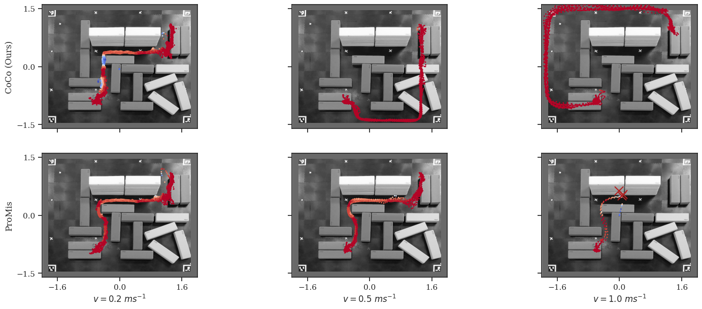
[ ]:
import glob
import pandas as pd
import seaborn as sns
fig, axes = plt.subplots(1, 2, figsize=(10, 4), sharex=True, sharey=True)
for ax in axes:
ax.add_patch(
plt.Rectangle((-2.0, -1.6), 4.0, 4.0, fc="dimgray", zorder=1)
)
ax.imshow(
scene_image.convert("L"),
cmap="gray",
extent=(-1.835, 1.835, -1.45, 1.45),
rasterized=True,
zorder=2
)
ax.set_xlim(-2, 2)
ax.set_ylim(-1.6, 1.6)
ax.set_xticks([-1.835, 0.0, 1.835], labels=["-1.835", "0", "1.835"])
ax.set_yticks([-1.45, 0.0, 1.45], labels=["-1.45", "0", "1.45"])
ax.set_xlabel("x / m", fontsize=15)
axes[0].set_ylabel("y / m", fontsize=15)
matching_files = glob.glob("rosbag-recordings/coco-dynamic/*.csv")
for file in matching_files:
df = pd.read_csv(file)
landscape = CartesianCollection.load("virtual_setup_landscape_speed_0.5.pkl")
class Mock:
def __init__(self):
self.density = multivariate_normal([0.0, 0.0], [[1.0, 0.0], [0.0, 1.0]])
def sample(self, n, c):
return [self.density.rvs(n)]
path = 1000.0 * np.vstack([df['stateEstimateX'], df['stateEstimateY']]).T
compliance_ps = ConstitutionalController().compliance(path, landscape, Mock(), None, 100)
velocity_image = axes[0].scatter(df['stateEstimateX'], df['stateEstimateY'], c=df['velocity'], cmap="hot", s=1, zorder=3, vmin=0, vmax=1.2)
compliance_image = axes[1].scatter(df['stateEstimateX'], df['stateEstimateY'], c=compliance_ps, cmap="coolwarm_r", s=1, zorder=3, vmin=0, vmax=1)
cbar = plt.colorbar(velocity_image, ax=axes[0], aspect=25, fraction=0.03, pad=0.02)
cbar = plt.colorbar(compliance_image, ax=axes[1], aspect=25, fraction=0.03, pad=0.02)
sns.despine()
plt.tight_layout()
plt.savefig('dynamic_coco.pdf')
plt.show()
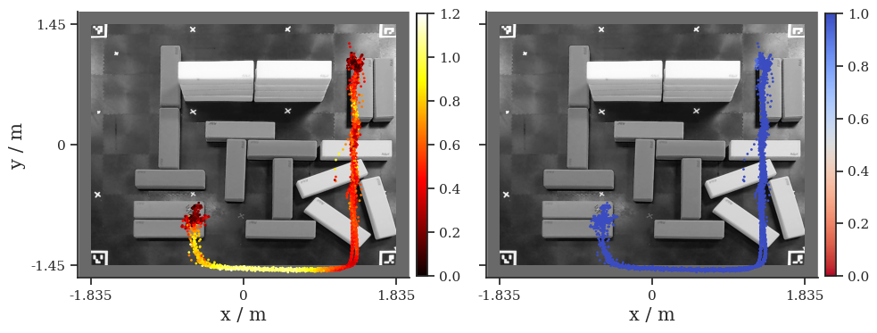
[1]:
import glob
import torch
import pandas as pd
import numpy as np
from promis import DoubtDensity
import matplotlib.pyplot as plt
import seaborn as sns
torch.set_default_dtype(torch.double)
# Data preparation
training_xy = None
training_controller = None
training_speed = None
training_angle = None
for drone_speed in [0.2, 0.5, 1.0]:
matching_files = glob.glob(f"rosbag-recordings/coco-fixed-{drone_speed}/*.csv")
dfs = []
for match in matching_files:
dfs.append(pd.read_csv(match))
for df in dfs:
xs = torch.from_numpy(df["errorX"].to_numpy())[:, None]
ys = torch.from_numpy(df["errorY"].to_numpy())[:, None]
xy = torch.hstack([xs, ys])
positions = torch.cat([torch.from_numpy(df["posCtltargetX"].to_numpy())[:, None], torch.from_numpy(df["posCtltargetY"].to_numpy())[:, None]], dim=1)
directions = positions[1:] - positions[:-1]
angles = torch.atan2(directions[:, 1], directions[:, 0])
if training_xy is None:
training_xy = xy[1:]
training_speed = torch.from_numpy(df["velocity"].to_numpy())[1:, None]
training_angle = angles[:, None]
else:
training_xy = torch.vstack([training_xy, xy[1:]])
training_speed = torch.vstack([training_speed, torch.from_numpy(df["velocity"].to_numpy())[1:, None]])
training_angle = torch.vstack([training_angle, angles[:, None]])
# # Add randomly rotated copies
# for _ in range(10):
# theta = torch.rand(1).item() * 2 * np.pi # angle between 0 and 2π
# rotation_matrix = torch.tensor(
# [[np.cos(theta), -np.sin(theta)], [np.sin(theta), np.cos(theta)]]
# )
# training_xy = torch.vstack([training_xy, xy @ rotation_matrix.T])
# training_speed = torch.vstack([training_speed, torch.from_numpy(df["velocity"].to_numpy())[:, None]])
# Training
doubt_space = {
"speed": {
"type": "continuous",
"values": training_speed,
},
"yaw": {
"type": "continuous",
"values": training_angle,
},
"controller": {
"type": "categorical",
"number_of_classes": 3,
"values": torch.tensor([0]).repeat((len(training_speed), 1))
}
}
doubt_density = DoubtDensity(
doubt_space=doubt_space, number_of_states=2, number_of_hidden_features=100, number_of_layers=5
)
number_of_epochs = 4
batch_size = 100
losses = doubt_density.fit(training_xy, doubt_space, number_of_epochs, batch_size)
# Show Loss
fig, ax = plt.subplots(1, 1, figsize=(5.5, 4.5))
ax.plot(range(len(losses)), losses, c='r')
ax.set_xlim(None, 500)
ax.set_ylim(None, 6)
ax.set_ylabel(r"$-log\ \delta(x | \theta)$", fontsize=15)
ax.set_xlabel("Training Steps", fontsize=15)
sns.despine()
plt.tight_layout()
plt.savefig('doubt_loss.pdf', bbox_inches=0)
plt.show()
Learning Doubt Density: 100%|██████████| 4/4 [00:01<00:00, 2.04epoch/s]
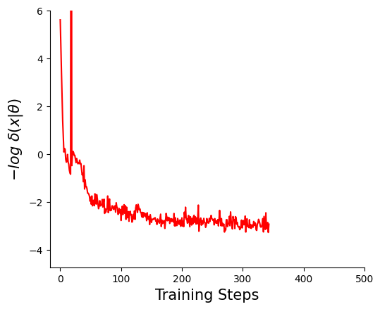
[2]:
# Density
fig, ax = plt.subplots(8, 9, figsize=(15, 10), sharex=True, sharey=True)
speeds = np.linspace(0.1, 1.0, 9)
yaws = np.linspace(-np.pi, np.pi, 8)
for time_index, speed in enumerate(speeds):
ax[7, time_index].set_xlabel(rf"$v = {speed:.1f}\ ms^{-1}$", fontsize=15)
for yaw_index, yaw in enumerate(yaws):
for time_index, speed in enumerate(speeds):
axis = ax[yaw_index, time_index]
axis.set_aspect(1)
axis.set_yticks([-1, 0, 1])
axis.set_xticks([-1, 0, 1])
if time_index == 0:
axis.set_ylabel(f"Yaw {yaw:.1f}", fontsize=15)
resolution = 100
xline = torch.linspace(-1.0, 1.0, resolution)
yline = torch.linspace(-1.0, 1.0, resolution)
xgrid, ygrid = torch.meshgrid(xline, yline, indexing="xy")
states = torch.cat([xgrid.reshape(-1, 1), ygrid.reshape(-1, 1)], dim=1)
with torch.no_grad():
doubt_space["speed"]["values"] = torch.tensor([speed] * resolution * resolution)[:, None]
doubt_space["yaw"]["values"] = torch.tensor([yaw] * resolution * resolution)[:, None]
doubt_space["controller"]["values"] = torch.tensor([0] * resolution * resolution)[:, None]
density = doubt_density.prob(states, doubt_space).reshape(resolution, resolution)
# samples = doubt_density.sample(1000, doubt_space)
# axis.scatter(samples[:, 0], samples[:, 1])
axis.scatter(xgrid.numpy(), ygrid.numpy(), c=density.numpy(), cmap="Reds", rasterized=True)
sns.despine()
plt.tight_layout()
plt.subplots_adjust(
wspace=0.1,
hspace=0.1,
)
plt.savefig("doubt_density.pdf")
plt.show()
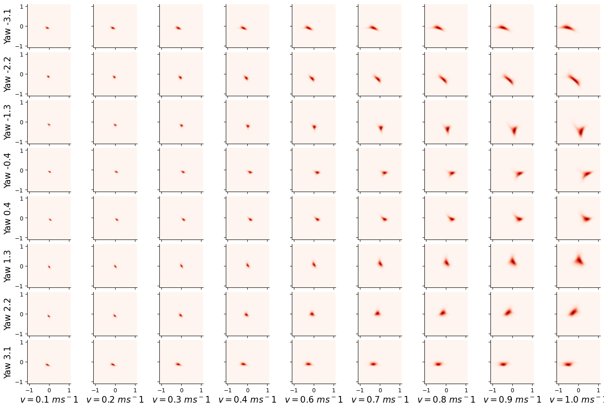
[ ]: